DỊCH VỤ NỔI BẬC
Nối Mi Chuyên Nghiệp
-
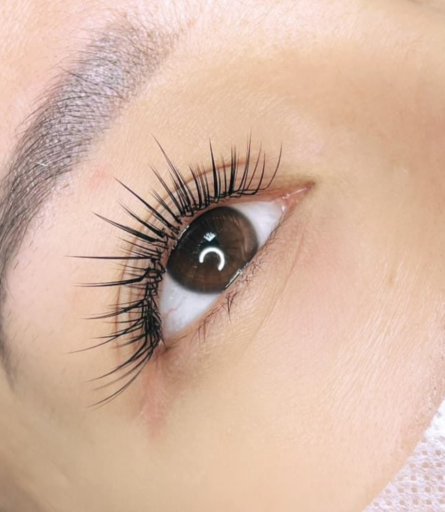
Mi Anime
Nối mi Anime là một trong những kiểu nối mi đẹp hot nhất hiện nay, giúp đối mắt to tròn quyến rũ.
-
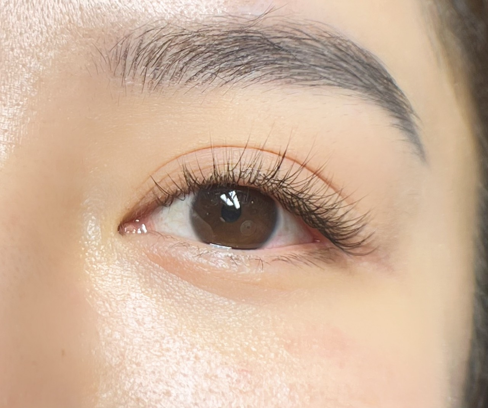
Mi Classic tự nhiên
Nối mi classic là kiểu nối mi đơn giản, dễ thực hiện, mang lại một bờ mi cong, dài, rậm một cách tự nhiên, ăn gian ánh nhìn.
-
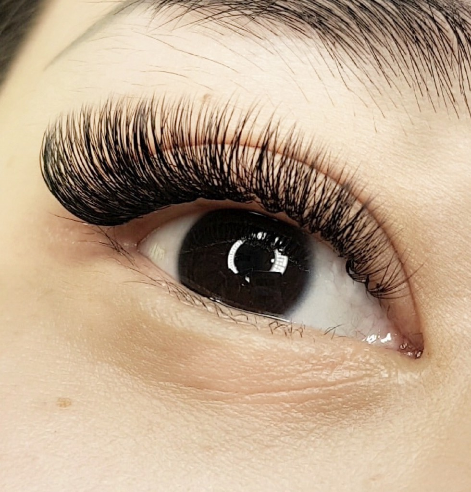
Mi Volume Cat Eye
Nối mi kiểu mắt mèo là phương pháp nối mi đặc biệt, càng về đuôi mắt, sợi mi sẽ càng dài.
-
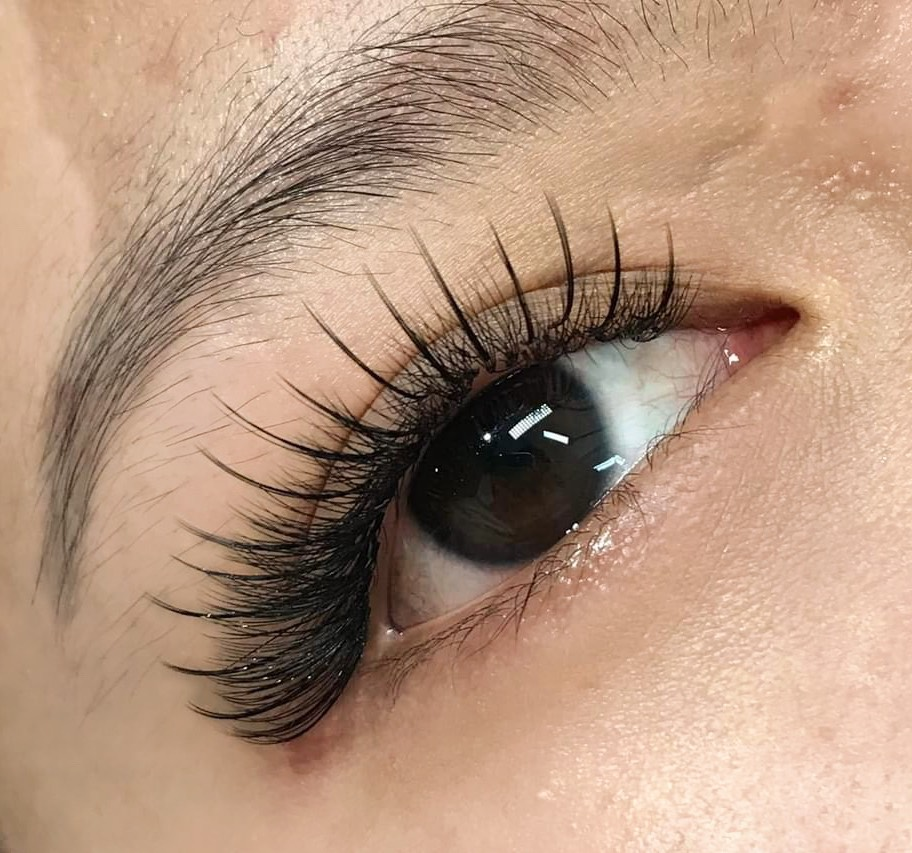
Mi Katun
Sử dụng kỹ thuật để gắn các sợi mi với độ dài ngắn khác nhau đan xen một cách tinh tế ở mi mắt. Điều này sẽ giúp các chị em có được hàng mi đẹp tự nhiên cuốn hút, nổi bật.
Chân Mày Tự Nhiên
-
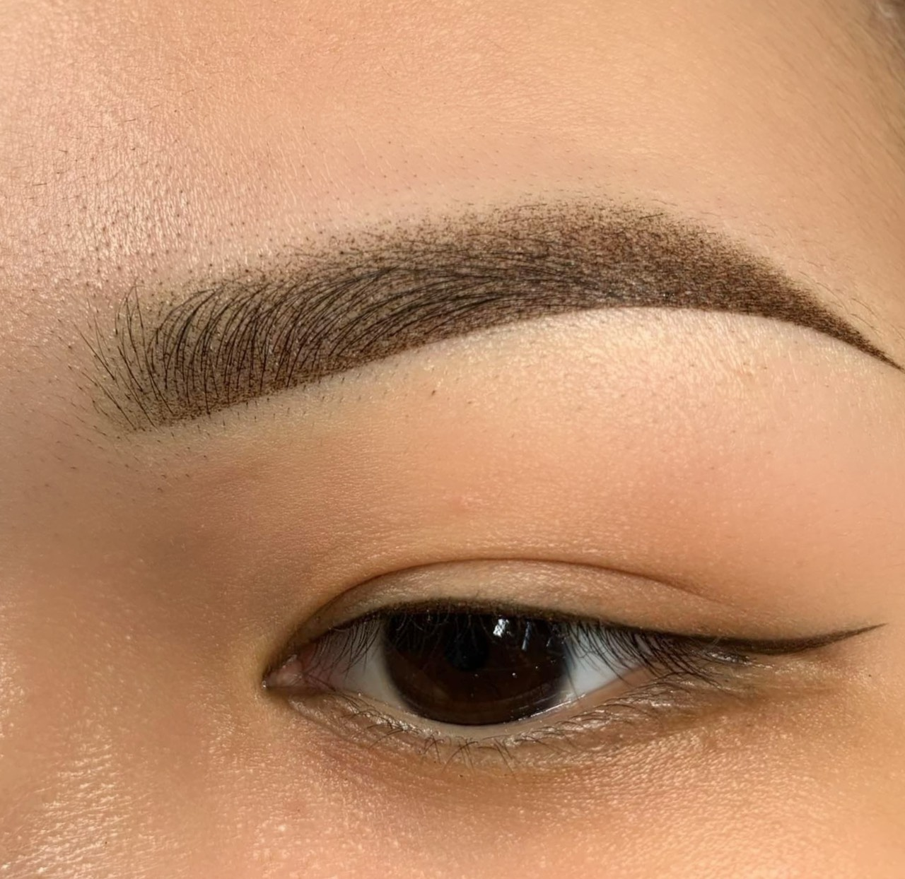
Mày Phun Ombre
Đây là một phương pháp phun xăm lông mày bán vĩnh viễn tạo bóng cho lông mày để hoàn thiện hình dạng của chúng, lấp đầy những vùng thưa thớt và tạo hiệu ứng chuyển màu.
-
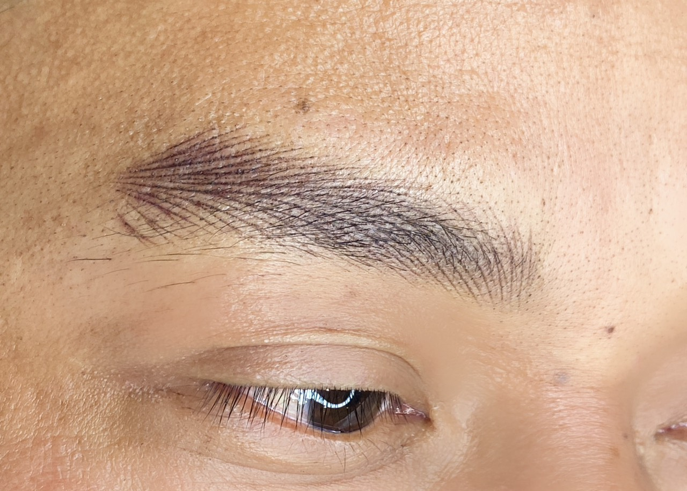
Sợi HairStroke Nam
Sợi Hairstroke nam tạo khuôn dáng phù hợp và đi sợi khéo léo để tạo được đôi chân mày tự nhiên nhất và không mất đi sự nam tính.
-
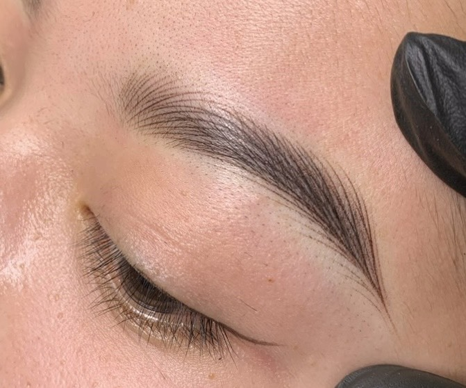
Sợi HairStroke Nữ
Chân mày hairstroke nữ được sử dụng để cải thiện hình dạng và màu sắc của lông mày. nhằm tạo ra sợi lông mày mảnh, để mang lại hiệu ứng tự nhiên và chân thật cho khuôn mặt
-

Mày bút chì PMU
PUM là hình thức trang điểm vĩnh viễn để tạo hình, tạo đường nét giống như trang điểm.
Phun Môi Thẩm Mỹ
-
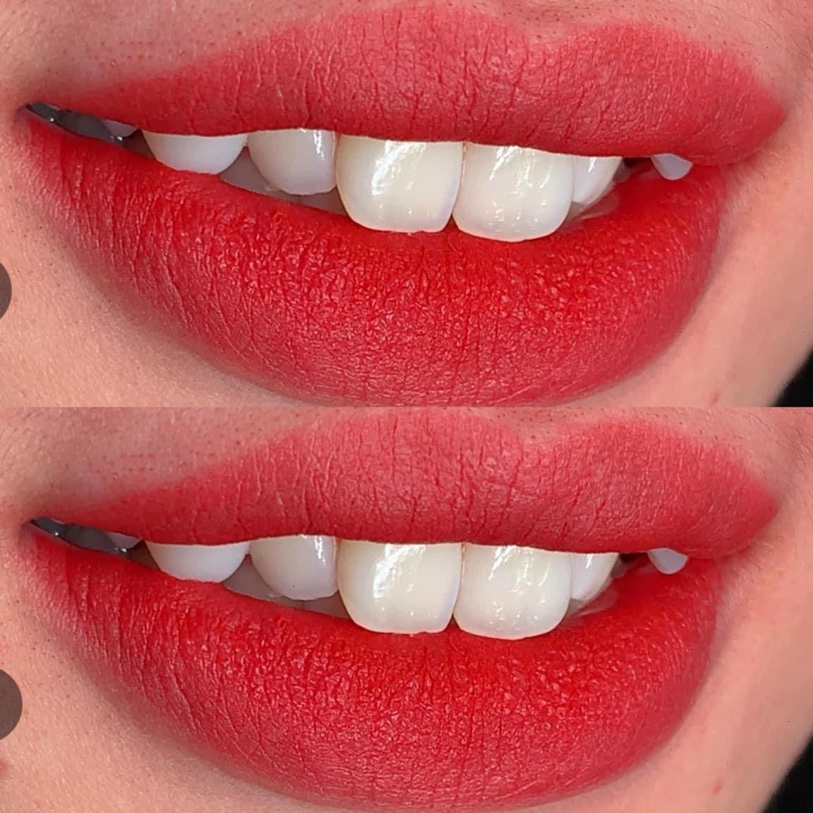
Môi Hồng Đào
Môi màu hồng đào là tông màu sáng, tươi trẻ được khá nhiều chị em lựa chọn, màu môi này giúp làn da sáng hơn, che đi nhiều khuyết điểm.
-
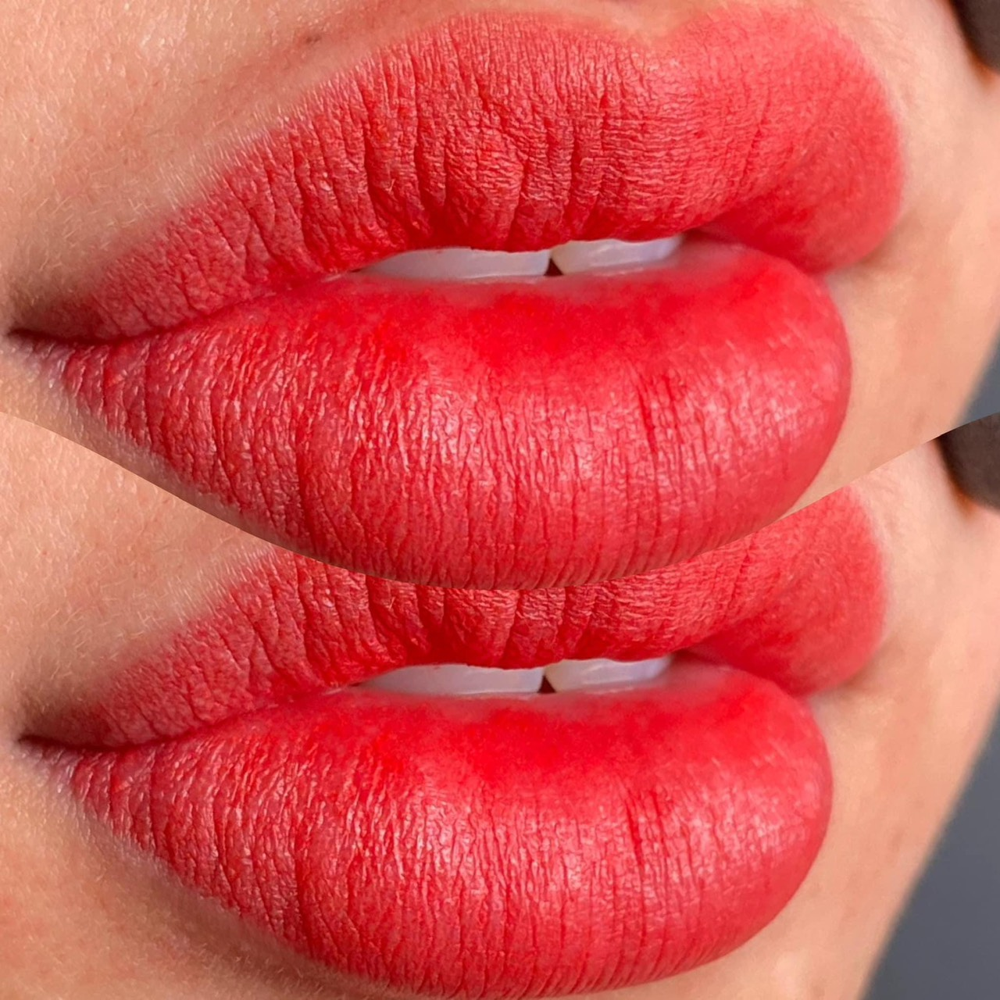
Môi Đỏ Cam
Một sắc môi đầy quyến rũ và cuốn hút, là điểm nhấn hoàn hảo để thể hiện phong cách thời trang của các chị em.
-
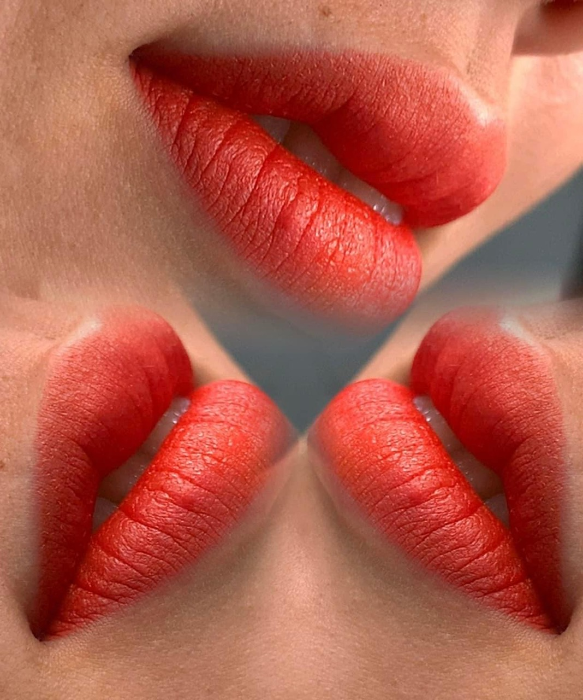
Môi Cam Tươi
Sự kết hợp 7 phần cam và 3 phần đỏ giúp tôn da, mang đến sự tươi tắn, trẻ trung và năng động.
-
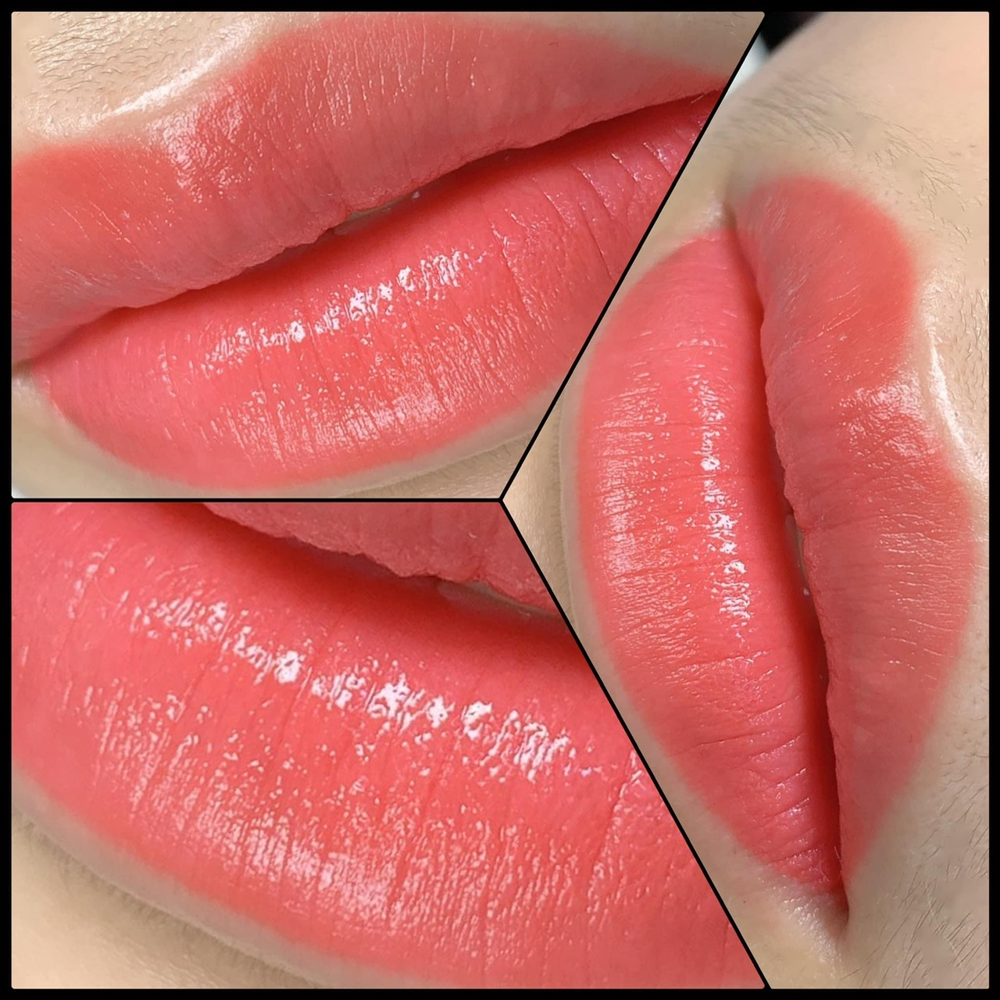
Môi Hồng Nude
Phù hợp với nhiều nền da khác nhau từ làn da trắng, trung bình đến ngăm, là bí quyết để tạo nên một diện mạo tinh tế và cuốn hút.
Kỹ Thuật Plasma Fibroblast
Plasma Fibroblast trong thẩm mỹ làm được gì? Plasma Fibroblast trong thẩm mỹ có thể điều trị được rất nhiều tình trạng da khác nhau như: điều trị sẹo lồi sẹo lõm, điều trị vết rạn bụng, xóa nốt ruồi và mụn thịt, tái tạo và trẻ hóa toàn da mặt, nhấn định hình nếp mí mắt, trẻ hóa vùng da mắt chảy xệ, trẻ hóa vùng cổ – tay – chân nhăn nheo. Nhưng đặc biệt có một vấn đề là Plasma điều trị rất hiệu quả và được nhiều anh chị em ngành phun xăm ứng dụng đó chính là Plasma xóa nếp nhăn môi. Kỹ thuật này sẽ chấm những tia Plasma lên môi giúp xóa bỏ các nếp nhăn lão hóa, xỏa bỏ lượng mực phun xăm lâu năm bết trên môi, xóa bỏ những hạt bã nhờn Fodyce cứng đầu mà trong phun xăm không thể xử lý triệt để được.
Cảm nhận khách hàng